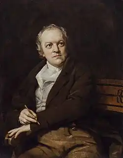
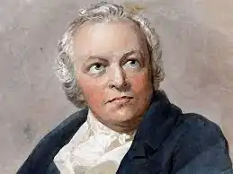

БЛЕЙК, Вільям (Blake, William — 28.11.1757, Лондон — 12.08.1827, там само) — англійський поет, художник, гравер, оригінальний ілюстратор серії ліричних і епічних поем "Пісень невинності "("Songs of Innocence", 1789) і "Пісень досвіду" ("Songs of Experince", 1794).
Блейка вважають одним із найперших і найбільших представників романтизму. Він народився в сім'ї крамаря трикотажними виробами, зростав у Лондоні. У десятилітньому віці почав відвідувати художню школу Г. Парса на Стренді, посилено займався самоосвітою, багато читав і навчався робити гравюри з малюнків видатних майстрів Ренесансу, а згодом, найнявшись учнем до гравера Д. Безайра, часто відвідував Вестмінстерське абатство. Під час навчання в Королівській академії викликав неприязнь Д. Рейнольдса. У 1782 р. Блейк одружився з бідною неписьменною дівчиною Катериною Бушер, яка стала його найнадійнішим і найвідданішим другом. Поміж товаришів Блейка були відомі скульптор Д. Флаксман і художники Г. Ф'юзелі та Т. Стотхард. Д. Флаксман був одним із тих, хто оплатив друк першої поетичної збірки Блейка "Поетичні начерки" ("Poetical Sketches", 1783), написаної за мотивами народної пісенної творчості. У збірку ввійшли твори, створені Блейком у віці від 12 до 20 років. У 1784 р. після смерті свого батька Блейк став власником друкарні в Лондоні, запросивши у помічники свого брата Роберта. Проте Роберт незабаром помер, що надзвичайно вразило Блейка. Винайшов метод гравіювання тексту й ілюстрацій, назвавши його "освітленим друкуванням": з допомогою техніки опуклого офорту кожна сторінка книги, надрукована у монохромі з гравюри, містила і текст, й ілюстрації.
Першими книжками, надрукованими з використанням цього методу, були трактати: "Немає природної релігії" ("There is no Natural Religion") і "Усірелігії — одна" ("All Religions are One", 1788). Обидва трактати були спрямовані проти раціоналістичної та матеріалістичної філософії Дж. Локка й обстоювали перевагу уяви над розумом; лише уява, на думку Блейкв, здатна сприймати безмежне. Розпочався період надзвичайної творчої активності Блейка: вийшли друком "Пісні невинності" і "Книга Тель" ("Book of Thel", 1789), "Французька революція" ("The French revolution", 1791). "Шлюб Неба та Пекла" ("The Marriage of Heaven and Hell", 1793), "Видіння дочок Альбіону" ("Visions of the Daughters of Albion", 1793) і "Пісні невинності та досвіду" (1794). Якщо перші поетичні начерки Блейка були доволі наслідувальними, то "Пісні невинності", написані технікою "освітленого друкування", відзначаються яскравою та свіжою самобутністю. Витонченість і ніжність лірики та малюнка в них гармонійно поєднуються. "Пісні невинності" та "Пісні досвіду" змальовують два стани людської душі. Ключовий символ "Невинності" — ягнятко, з яким співвідноситься образ тигра у "Досвіді". Тигр — утілення енергії, сили, пристрасті та жорстокості: Тигре! Твій вогненний гнівВ чорній пущі забринів.Хто із сонця і з ночейКреше жах твоїх очей?(Тут і далі пер. В. Коптілова)Блейк одразу ж виділився поміж поетів не лише своєю яскраво вираженою самобутністю, а й прагненням до експериментування як в описовій, так і в ліричній поезії. Так, приміром, у "Тіріелі" та "Книзі Тель" Блейк використав довгий неримований рядок із 14 складів, який став основним метром його описової поезії. Полеміст за вдачею, Блейк нічого не приймав на віру в царині філософії, етики, політики, релігії, все піддаючи аналізу та критиці. У його розлогих поемах зі складною образністю, нелегкими для розуміння символами та подекуди архаїчною мовою напружено дискутуються питання відсталості моралі та святенництва закостенілої церковної думки, безкрилості утилітаризму та самовдоволеного раціоналізму тощо. У "Шлюбі Раю та Пекла" Блейк так сформулював свої думки про діалектику світу: "Рух виникає з протилежностей. Потяг і Відраза, Думка та Дія, Любов і Ненависть необхідні для буття Людини. Протилежність створює те, що віруючі називають Добром і Злом. Добро пасивне і підкоряється Думці. Зло активне і породжується Дією. Добро — це Рай, Зло — це Пекло". У поемі "Видіння дочок Альбіону "в образі центральної постаті поеми — Утун Блейк оспівує сексуальну насолоду та свободу. Після смерті улюбленого брата Роберта Блейк із дружиною поселилися в лондонському Сохо, а згодом перебрались у Ламберт на південний берег Темзи. Розпочався найважчий період життя поета і художника, позначений його світовим визнанням, надзвичайною популярністю, але водночас це найскладніший період — період духовного сум'яття та глибоких роздумів над долями людства. У цей час вийшли друком "Пророчі книги", куди ввійшли такі поеми: "Америка. Пророцтво" ("America. A Prophecy", 1793), "Європа. Пророцтво" ("Europe. A Prophecy", 1794), "Книга Урізена" ("The Book of Urizen", 1794), "Книга Аханії" ("The Book of Ahania", 1795), "Книга Лоса" ("The, Book of Los", 1795) і "Пісня Лоса" ("The Song of Los", усі — в 1795). У цих творах Блейк висловлює своє ставлення до Біблії, розробляє серію космічних міфів, які є своєрідними паралелями до біблійних, створює складну філософську систему, висловлює пророцтва щодо сутності людської вдачі. Слід зазначити, що Блейк ще в дитинстві поринав у незвичні духовні стани, бачив божественні видіння, а його специфічне мислення художника і поета робило витвори його фантазії абсолютно реальними, зримими до найменших деталей, ліній і барв; схильність до містицизму зміцнилася в роки змужніння під впливом творів шведського містика Е. Сведенберга. Основною символічною постаттю "Пророчих книг" є Урізен, зневажений, безсмертний, котрий поєднує в собі Єгову та силу розуму і закону, які Блейк вважав такими силами, які пригнічують природну енергію людської душі. Центральні конфлікти у "Пророчих книгах" виникають поміж силами Розуму (Урізен), Уяви (Лос) і Бунту (Оре). У першому пророцтві Блейк висловлює своє ставлення до американської революції, яку вважає бунтом Орса, духа бунту. Так само визначає він християнство у Європі і французьку революцію ("Європа"). "Книга Урізена" — своєрідна пародія на біблійну книгу Буття, де Творець зображений в образі Урізена "темною силою", а в "Книзі Аханії", яка є своєрідною парафразою біблійного "Виходу", наполегливо звучать теми французької революції, взаємовідносин влади і терору, насильства та мотивів покути. Поема "Книга Урізена" написана короткими неримованими рядками з трьома наголошеними складами, які підкреслюють приховану силу, велич і похмуру атмосферу пророцтва. "Книгою Лоса "завершується період експериментування Блейка. У 1795 р. Блейк зробив ілюстрації до "Нічних думок" Е. Юнга, створивши 537 акварельних малюнків. Одночасно він розпочав працю над об'ємною епічною поемою, яку спочатку назвав "Вала", а згодом перейменував у "Чотири Зоаси" ("The Four Zoas"). Бйорнсон надмірно ускладнив міфологічну схему, позбавив поему цільності та єдності композиції, зробивши її чудовим великим фрагментом, який послугував матеріалом для наступних його творів — "Мільтон" ("Milton", 1804-1808) і "Єрусалим" ("Jerusalem", 1804-1820). У 1800 р. Блейк із дружиною поселилися в маєтку сасекського сквайра В. Хейлі, який вважав себе меценатом і покровителем таланту Блейка. Тут, у Сасексі, Блейк створив свій найвідоміший твір "Пророкування невинності" зі знаменитими початковим рядками, які передали суть романтичного бачення: Бачити світ у зерні піску,Небо — у квітці синій,В своїй долоні безкрайність усюІ вічність в одній годині.У 1804—1808 pp. Блейк награвіював "Мільтона". Поема за суттю своєю до певної міри автобіографічна, побудована у формі суперечки Дж. Мільтона і Сатани. Така форма відображала внутрішній конфлікт Блейка, який прагнув звільнитися з-під дріб'язкової та поблажливої опіки В. Хейлі. Найзначнішою і розкішно ілюстрованою поемою Блейка є "Єрусалим". Цей твір сповнений найвишуканішої символіки. Основна тема поеми — пробудження гіганта Альбіона (символ Англії та всього людства) зі сну Ульро, або Пекла абстрактного матеріалізму. Його оновлення та воскресіння відбуваються з допомогою Лоса, архетипу художника, творчої особистості, творчої свідомості. Єрусалим символізує втрачену душу людства. Возз'єднання Альбіона з Єрусалимом у фіналі поеми означає віднайдення людством всезагального єднання, братства та щастя. Останній період життя Блейка не зовсім вдалий. У 1809 р. він спробував ознайомити широку аудиторію зі своїми малюнками й акварелями, написав ґрунтовний "Описовий каталог", але виставку відвідало лише кілька людей. Блейк усе життя наполегливо шукав цілковитої реалізації своїх творчих можливостей і намагався знайти людей, котрі могли йому в цьому допомогти. Такою людиною виявився художник Дж. Ліннелл, який познайомив Блейка із групою молодих митців, поміж яких був С. Палмер. Група захоплено прийняла Блейка-художника, вважаючи його своїм учителем. Останні роки Блейка цілком віддався образотворчому мистецтву, створивши єдиний поетичний твір "Вічне Євангеліє", незакінчений, украй екстравагантний в інтерпретації особистості та життя Ісуса Христа, його вчення. Блейк також доручили ілюструвати "Божественну комедію" Данте. Він устиг зробити 102 акварелі, які вирізняються незвичайною кольористикою. Малюнки й акварелі Блейка різко вирізнялися з-поміж усього створеного його сучасниками. Водночас помилковим було б твердження, що вони не пов'язані з жодною художньою традицією. Блейк серйозно вивчав гравюри, зроблені з творів Мікеланджело та Рафаеля. Значний вплив справили на нього сучасні англійські художники, які належали до фігуративної школи живопису, як, приміром, Д. Баррі, Д. Мортімер, Г. Ф'юзелі. Блейк, як і вони, любив малювати оголені людські постаті у драматичних позах, несподівані ракурси з підкреслено сильними лінійними контурами. Постаті Блейка були інколи з вигляду деформованими — з надто великими ногами та руками, стиснутими чи, навпаки, розпластаними тілами, але це підкреслювало внутрішню динаміку душі, прагнення художника вловити момент прояву цієї динаміки. Блейк завжди захоплювався не кольором, а сильним рисунком, яскравим контуром, хоча він був чудовим кольористом, що підтверджують його ілюстрації до "Книги Йова". Блейк-художник урешті-решт переміг Блейка-поета і Блейка-мислителя та інтерпретатора Біблії. Улюбленими сюжетами для Блейка залишилися твори Дж. Мільтон, Біблія, Данте. Вони допомагали йому подолати внутрішню кризу його душі, сум'ятливої та тривожної, яка мріяла віднайти втрачену гармонію буття в хаосі сучасного світу. Цікаво, що після Блейка англійське образотворче мистецтво не є настільки оригінальним і впливовим, як в епоху романтизму.